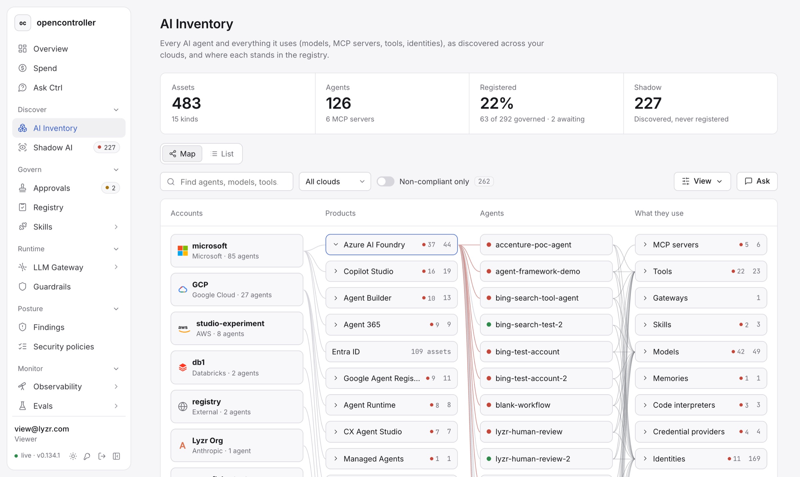

Discover
AI Inventory and Shadow AI
A map of accounts, products, agents and what they use. Filter to the non-compliant, then register shadow assets one at a time or a whole connection at once.
Open source · AI governance control plane
opencontroller connects to Microsoft, AWS, Google Cloud, Databricks, Anthropic and Snowflake, finds every agent, model, MCP server and API key, and shows which ones are governed, what they cost and where they are exposed.
Interactive, on synthetic data. No setup. About ten minutes end to end.

01 / Why it exists
Teams build agents in Copilot Studio, spin up models in Foundry and Bedrock, and hand out Claude API keys. Each cloud shows its own slice. Nobody sees the whole estate, who answers for each piece, or what it spends.
opencontroller reads every connected cloud every five minutes, puts it all in one inventory, and splits it into what is governed and what is shadow. Then it checks the estate against 36 security policies mapped to OWASP, MITRE ATLAS, NIST AI RMF, ISO/IEC 42001 and the EU AI Act, and joins the cloud bills to the assets that ran them up.
02 / How it works
Add a cloud in Integrations with a read-only role. Scans run every five minutes.
Agents, models, MCP servers, tools, identities and API keys land in one inventory and one map.
Shadow assets get an owner and a purpose, an admin approves them, and everything is written to the audit log.
Route model calls through the LLM gateway, screen them with guardrails, trace them and score them with evals.
03 / What is inside
Discover
A map of accounts, products, agents and what they use. Filter to the non-compliant, then register shadow assets one at a time or a whole connection at once.
Govern
Registration requests wait for an administrator. Approve and the asset joins the registry with an accountable owner. Reject and it stays shadow.
Posture
665 open findings by cloud, category and framework. Turn a policy off and watch the findings follow.
Spend
Cloud bills, licences and traced model calls in one place, with spikes and unregistered spend flagged for a look.
Runtime
Virtual keys with budgets and allowed models, every call logged with latency and cost, MCP servers and providers watched for health.
Runtime
Personal data, secrets, prompt injection and unsafe content, checked on the way to the model and back. Try a guardrail on sample text.
Monitor
Traces, latency heat maps, top issues and cost per project, with LLM-as-a-judge evaluators scoring production traffic.
Govern
Versioned skills, scanned with your guardrails before they go live, then served to Claude Code as a plugin marketplace.
Inside the demo estate
Register a shadow agent, approve it, run a scan, try a guardrail. Every screen explains itself as you go.
04 / FAQ
No. Every agent, bill, finding and trace in the demo is synthetic. It is shaped like a real enterprise estate so the numbers behave the way they would on your clouds.
So we know which teams are looking and can follow up with something useful. We only accept company addresses. Lyzr people sign in with their Microsoft account.
Yes. Register, approve, revoke, scan, turn policies off, make virtual keys and try guardrails. Changes stay in your browser, and Reset demo data puts everything back.
Microsoft (Azure AI Foundry, Copilot Studio, Agent 365, Entra ID), AWS (Bedrock AgentCore, IAM), Google Cloud (Agent Registry, Agent Runtime, CX Agent Studio), Databricks, Anthropic and Snowflake, plus remote MCP servers and external endpoints you register by hand.
Book a demo and we will walk through connecting your clouds with read-only access, and what each role can see and change.
Before you go in
Lyzr people sign in with Microsoft. Everyone else tells us who they are with a work email.
Use your @lyzr.com or @lyzr.ai account. A Microsoft window opens and closes by itself.
You are in
Every screen has a short explainer card. Start on the Overview and follow the "Next" links.